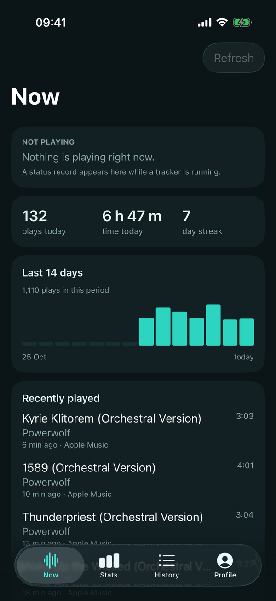
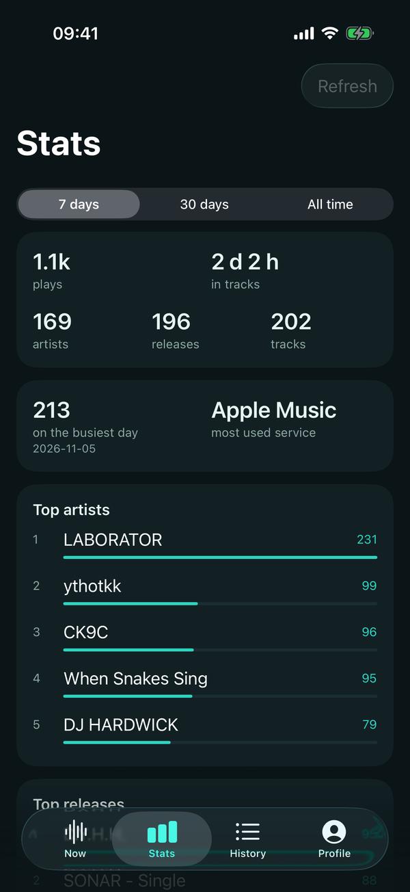
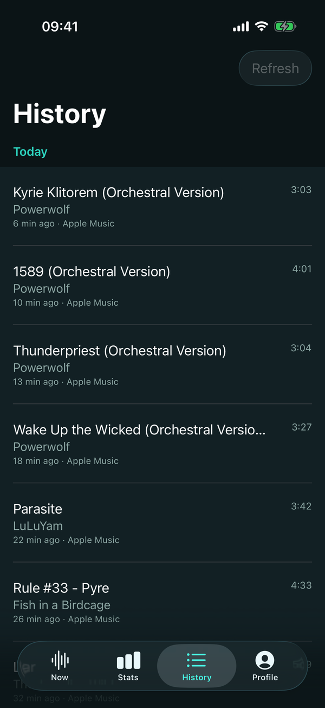
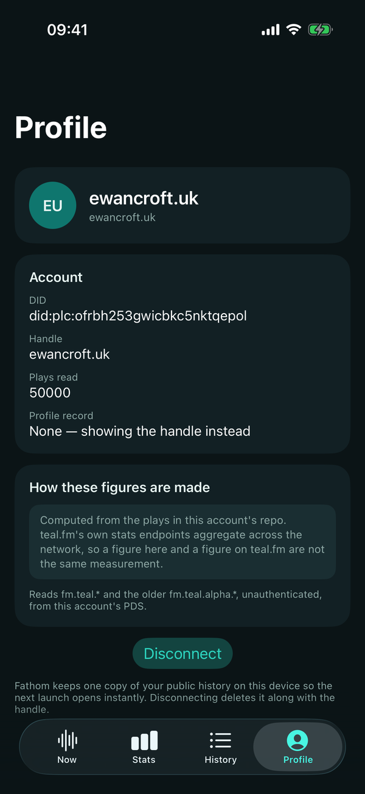

iPhone and iPad
Add the Fathom source in AltStore Classic. AltStore Classic signs the unsigned IPA with your own Apple ID; this is not an App Store or AltStore PAL build.
Add to AltStoreRequires iOS 18 or later and AltStore Classic.
teal.fm · iOS and Android
Fathom is a native dashboard for the plays already in your AT Protocol repository. Now playing, the last seven or thirty days, all-time totals, and every play grouped by the day you actually had.
Read-only. No account, no password, no token.
Install
Fathom 0.2.1 is distributed outside the app stores. Both routes are self-hosted and update from this site.
Add the Fathom source in AltStore Classic. AltStore Classic signs the unsigned IPA with your own Apple ID; this is not an App Store or AltStore PAL build.
Add to AltStoreRequires iOS 18 or later and AltStore Classic.
Add the self-hosted repository to F-Droid. The link includes the repo index fingerprint so F-Droid can verify it. Fathom is not in the official F-Droid catalogue.
Add F-Droid repoRequires Android 8.0 or later.
No App Store or Google Play listing yet. Direct APK and IPA downloads are on GitHub Releases.
What it is
teal.fm keeps plays in each person's own repository. Fathom resolves the handle, finds that account's PDS, and reads the public records directly. There is no Fathom backend in the middle.
Now, Stats, History and Profile draw from one history read, so the play count on one screen cannot disagree with another. The dashboard opens on the newest page and fills in as the rest arrives.
A read that stops at the 50,000-play guard or on a failed page is labelled partial. Plays with no readable timestamp are counted and listed rather than quietly dropped.
The app




The arithmetic
com.atproto.repo.listRecords returns the newest plays
first. Fathom pages until the repository runs out, so “All time” is a
total rather than the newest slice.
Plays, artists, releases and tracks are aggregated by a shared Kotlin core on both platforms. teal.fm's network-wide stats are a different measurement, and Fathom never presents one as the other.
Transient rate limits and server failures are retried with bounded backoff. A rejected page keeps what was read and carries the partial label; a 404 still means the namespace is empty.
Release status
Fathom 0.2.1 is the current signed release: an Android APK through the F-Droid repo, and an unsigned IPA through AltStore Classic, which signs it on install. Both are built from the tagged source. The apps have been run against a real account on an Android emulator and an iOS simulator; they have not yet been smoke-tested on physical hardware.